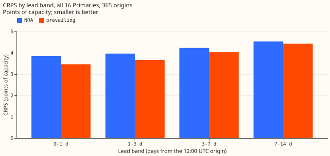
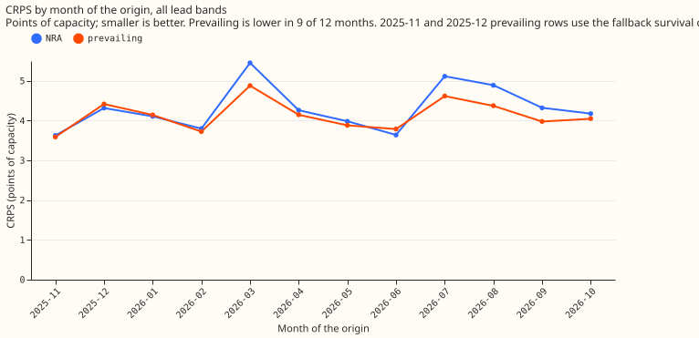
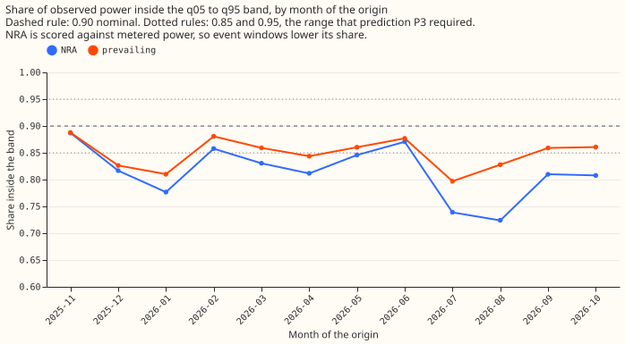
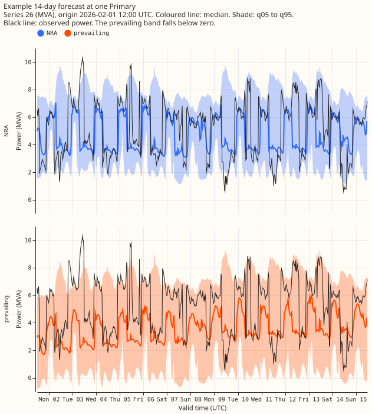

What does a one-year backtest of the class 2 Candidate demand network with a survival-hazard prevailing output score at the 16 Primaries, with every input at least 6 hours old?
A one-year backtest of the Candidate demand neural network at the 16 Primaries scored a CRPS of 4.14 points of capacity for the prevailing output and 4.32 for the NRA output. The year runs from 2025-11-01 to 2026-10-31, with one forecast origin per day at 12:00 UTC and 672 half-hours (14 days) per origin. The backtest is descriptive, not a ranking: the year overlaps the development months and the final-test window, nothing was tuned on it, and nothing is adopted for production. A Primary is a primary substation, metered in MW or MVA (megavolt-amperes, apparent power). The Candidate is the neural network that experiment 612 chose from three classes of demand network design: it reads lagged power, power summaries from neighbouring Primaries, and the ECMWF ensemble weather forecast (ENS, 51 members). It outputs 11 quantiles per half-hour.
The two outputs differ in how they treat a load shift. A load shift is a transfer of load between Primaries, usually for days to weeks and not labelled in NGED's data. The NRA output (normal running arrangement) is the Candidate's 11 quantiles, which forecast power as if no load shift were in force. The prevailing output mixes those 11 quantiles with a copy of them shifted by a learned depth, weighted by the probability that a load shift is still in force (the survival probability, read from a small neural-network output called the survival head, which predicts a hazard for each of 14 days). In November and December 2025 the survival probability comes from a fixed log-normal curve (the fallback), because no earlier month had yet produced training data for the survival head.
The score rises with lead time by 28% (prevailing) and 18% (NRA). The prevailing output's CRPS rises from 3.46 points of capacity at days 0 to 1 to 4.43 at days 7 to 14.

| Lead band | NRA CRPS | NRA median error | Prevailing CRPS | Prevailing median error |
|---|---|---|---|---|
| 0 to 1 days | 3.84 | 6.70 | 3.46 | 6.12 |
| 1 to 3 days | 3.96 | 6.92 | 3.66 | 6.48 |
| 3 to 7 days | 4.23 | 7.43 | 4.04 | 7.19 |
| 7 to 14 days | 4.53 | 8.00 | 4.43 | 7.94 |
| All | 4.32 | 7.59 | 4.14 | 7.39 |
CRPS is twice the mean pinball loss, and median error is the normalised mean absolute error of the median. All values are points of capacity. "Median error" is the normalised mean absolute error of the median (q50): 100 times the absolute error divided by the Primary's capacity, averaged over scored half-hours. CRPS is twice the mean pinball loss over the 11 quantile levels, divided by capacity, times 100. The pooled value weights each half-hour equally, so a Primary with a large spread counts once per half-hour, not once per Primary.
By month of the origin, the prevailing output has the lower CRPS in 9 of 12 months, but the two outputs are not scored like for like. The NRA output is lower in 2025-12 (the second fold that uses the fallback survival curve), 2026-01, and 2026-06.

| Month of origin | NRA CRPS | NRA median error | Prevailing CRPS | Prevailing median error |
|---|---|---|---|---|
| 2025-11 | 3.63 | 6.45 | 3.59 | 6.39 |
| 2025-12 | 4.32 | 7.42 | 4.42 | 7.56 |
| 2026-01 | 4.11 | 7.06 | 4.14 | 7.46 |
| 2026-02 | 3.80 | 6.98 | 3.73 | 6.83 |
| 2026-03 | 5.45 | 9.73 | 4.88 | 8.95 |
| 2026-04 | 4.26 | 7.78 | 4.15 | 7.39 |
| 2026-05 | 3.98 | 7.27 | 3.88 | 7.03 |
| 2026-06 | 3.64 | 6.45 | 3.79 | 6.76 |
| 2026-07 | 5.12 | 8.50 | 4.62 | 8.09 |
| 2026-08 | 4.89 | 8.18 | 4.38 | 7.86 |
| 2026-09 | 4.32 | 7.76 | 3.98 | 7.18 |
| 2026-10 | 4.18 | 7.33 | 4.05 | 7.06 |
The month is the month of the forecast origin. An origin on 31 October scores valid times until 14 November under 2026-10. The NRA output deliberately excludes load shifts that the metered power contains, so a lower prevailing CRPS partly reflects that the prevailing output may move with them.
Both outputs are too narrow, and the pre-registered coverage prediction P3 failed. P3 said that the q05 to q95 coverage of the NRA output would lie within 0.05 of 0.90 in every month. The NRA coverage lies within 0.05 of 0.90 in 3 of 12 months (2025-11, 2026-02, 2026-06). The NRA coverage runs from 0.72 (August) to 0.89 (November), the prevailing coverage from 0.80 (July) to 0.89 (November).

| Lead band | NRA q05 to q95 | NRA q25 to q75 | Prevailing q05 to q95 | Prevailing q25 to q75 |
|---|---|---|---|---|
| 0 to 1 days | 0.826 | 0.425 | 0.872 | 0.465 |
| 1 to 3 days | 0.821 | 0.418 | 0.864 | 0.456 |
| 3 to 7 days | 0.815 | 0.408 | 0.851 | 0.440 |
| 7 to 14 days | 0.810 | 0.403 | 0.839 | 0.426 |
Part of the NRA output's coverage shortfall is built in. The NRA output is a counterfactual target, scored here against metered power, so event windows fall outside its band by construction. Part of the coverage gap between the two outputs comes from that effect and not from a fault in the NRA band. The band was not rescaled in this experiment.

The example shows a Primary where the two outputs differ visibly. It is series 26 (metered in MVA) from the origin of 2026-02-01 12:00 UTC, one of the three origins at that Primary where the prevailing median differs most from the NRA median. The prevailing output moves often at this Primary and does not beat the NRA output there, and its q05 falls below zero MVA (see Caveats).
Predictions P1 and P2 were not tested. P1 compared the Candidate's score at days 0 to 10 after the extension to 14 days with experiment 620's stored Candidate on the same months. No matched run was made, so P1 is unevaluated. P2 asked whether the survival output stays calibrated at days 10 to 14, and the page has no measurement of it. The survival probability at days 10 to 14 is read from the generator, not checked against observed events (see Caveats).
Method
- Base neural network: the Candidate (arm
P7+D50: neighbour power summaries, 50% signal dropout, no explicit gate) of experiment 612 and experiment 613, as set up by experiment 610, experiment 620, and the encoder pre-training of experiments 559, 565, and 574. The Candidate's seed-mean 11 quantiles are the NRA output. The horizon limit is raised from 240 to 339 hours; ENS summaries reach about 351 hours. - Origins and weather: the weather is the ECMWF ENS 00Z run of the origin day (51 members),
which the Candidate treats as available at 09:00 UTC. The forecast is made at that native 09:00
UTC origin and relabelled to the contract's 12:00 UTC origin by adding 3 hours. Valid times before
12:00 UTC are dropped, leaving 672 half-hours per origin.
nwp_init_timeis 00:00 UTC of the origin day. - Lags and the 6-hour cut: the Candidate's lags and neighbour summaries read power observed at least 24 hours before its native origin, so the newest power read is from 09:00 UTC on the day before, 27 hours before the contract's 12:00 UTC origin. The contract's rule (nothing newer than origin minus 6 hours) therefore needed no change to the recipe. A check asserts that every lag time is at least 24 hours before the native origin.
- Folds and training: 12 monthly refits, with test months 2025-11 to 2026-10. Each fold trains
on cleaned power and weather available before its month, with the embargoes of experiment 613 (3
days at the mixer step, 7 days at the daily fine-tune), 2 seeds with seed-mean-then-sort
quantiles, and the 90-day recency half-life. Lag, weather, and date-time encoders are pre-trained
on ERA5 and CAMS, a fresh mixer is trained on the whole ENS history (starting 2024-04-01, so the
early folds have less ENS data), then the daily fine-tune runs. The cleaned power drops the
substation_zerorows, and the D15 and D18 histories are cut before 2025-03-01. - Prevailing output: the 11 quantiles of the mixture
(1 - p) NRA + p (NRA shifted by a learned depth d, with spread sigma), with the shifted part as 3 Gauss-Hermite components atd + g sigmaand the quantiles read from the mixture's cumulative distribution (experiment 647'smixture_quantiles).p = exp(-cumulative hazard), where the head outputs 14 daily hazards, sopkeeps falling to day 14. The head of experiment 652 (R-haz) sits on the Candidate and not on K1, with its gate-state input removed. - Training the head: the head trains on banks of injected shifts (the generator of experiment 650), one bank per earlier month, built from the real history of that month with synthetic shifts and forecast by that month's Candidate chain (inference only). Fold M's head trains only on banks of months before M and on rows whose valid time is before the start of M. Two seeds are averaged.
- Fallback in the first two folds: with fewer than 2 earlier banks (folds 2025-11 and 2025-12), the prevailing rows use B-haz instead: the Candidate plus its own recent residual times a log-normal survival curve fitted on synthetic durations (no fit on observed power). The prevailing rows equal the NRA rows exactly on 74% of November origins and 65% of December origins (where the residual is missing), and on no origin from 2026-01 onward.
- Full-row test matrices: inputs are built for every valid time from 12:00 UTC to 14 days later for every origin, including half-hours with no observed power, so that no input gap follows the stored matrices' gaps after 2026-10-17. Scoring is restricted to half-hours with observed, unflagged power.
- Units: quantiles are scaled by each Primary's capacity and stored in MW for series 7, 8, 10, 12, 13, 16, 17, and 18, and in MVA for series 3, 9, 11, 14, 15, 24, 25, and 26.
- Scoring: against
ground_truth_primaries.parquet(cleaned power, outside the file), divided byseries_capacity.parquet, as defined under the first table. - Compute: about 0.5 GPU-hours per fold for the Candidate chains, inside the 10 GPU-hour ceiling.
Checks
- Row count: 7,848,960 = 16 series x 365 origins x 672 half-hours x 2 outputs; 672 rows per series-origin-output.
- No duplicate keys; no null or non-finite quantile; no crossing in any of the 10 adjacent quantile pairs; all times are UTC.
- Timing: the file's NRA rows for a 12:00 UTC origin equal the native 09:00 UTC fit's seed-mean quantiles times capacity exactly (maximum difference 0.0), so the 3-hour offset is applied once.
- Leakage, fold logic: reviews by a Sonnet reviewer for leakage, a Sonnet reviewer for the contract, and an Opus reviewer of the fold logic found no leak into any fold's training data.
- Leakage, prevailing head: no automatic flag mask computed from the scored month is applied to the head's training rows, and fold M's head trains only on banks of months before M. A Sonnet review of the head's code checked both.
- File and scores: a Sonnet audit of the file, with a from-scratch re-run of one fold, passed. An Opus review of the file and the scores reproduced every score to 3 decimals and found no unit, timing, or scaling error.
- No observed power is stored in the file.
Caveats
- The survival probability beyond day 10 reflects the bank generator's duration prior. The generator draws short events of 3 to 14 days and long events of 28 to 112 days, none of 15 to 27 days, so hazards for days 11 to 14 are not estimated from observed events.
- The prevailing output has no floor at zero for MVA-only series. Series 26, 14, and 15 produce
more negative
q01rows than the NRA output (the lowest prevailingq01is -2.26 MVA at series 26, against -1.21 for NRA). Neither output is clamped. - Series 12 exports power (observed power runs from -0.92 MW to 1.28 MW, against a capacity of 3.0 MW), so its CRPS (13.0 to 13.6 points) is about three times the pooled value and adds about 0.6 points to it.
- The prevailing output loses to the NRA output at series 14 and 26 (CRPS 7.16 against 6.90 at series 14, 7.41 against 7.37 at series 26), and its median at series 26 differs from the NRA median by more than 5 points of capacity, at some lead, on 52% of origins.
- The first row of each origin covers the half-hour ending at the origin (11:30 to 12:00 UTC):
valid_timeis the end of the half-hour, and lead 0 is that row. - The bank's injected lags use the month's later power for proportional shifts, which stays within the months before the fold being scored.
Files
data/ml-experiments/backtest_year_2025-11_to_2026-10/primaries.parquet(private): 7,848,960 rows. Columns in order:time_series_id(Int8, original id),valid_time,nwp_init_time,power_fcst_init_time(UTC),q01,q05,q10,q25,q40,q50,q60,q75,q90,q95,q99(Float32, MW or MVA as listed in Method),NRA_or_prevailing("NRA"or"prevailing").- Code:
ml-experiments/00667-one-year-backtest-of-the-two-output-demand-network-at-primaries/(folds, export, merge, scoring, figures, and theprevailing/folder for the head). - Scores:
score/*_by_band_month.csvandscore/*_by_band_primary.csvin the experiment's data folder, with columns for CRPS, median error, and the two coverages. - Reviews:
reviews/in the experiment's data folder (the briefs and the answers).